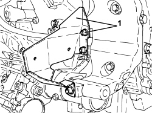
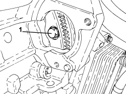
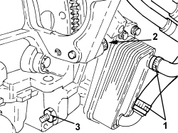
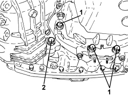
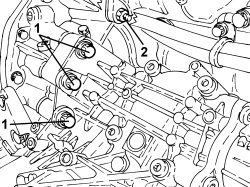
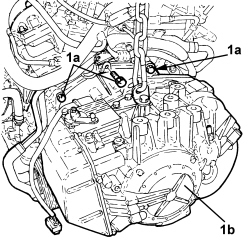
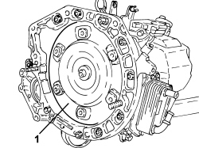
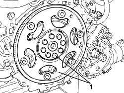

1004D20 POWER UNIT (AUTOMATIC TRANSMISSION) REMOVED, REMOVE AND RE-BUILD
- Path
- Procedures > 10 ENGINE > 1004 ENGINE AND POWER UNIT > 1004D REMOVE ENGINE AND WASH > 1004D20 POWER UNIT (AUTOMATIC TRANSMISSION) REMOVED, REMOVE AND RE-BUILD
- Kind
- repair procedure (removal / refitting; the operation number is the code)
- Applies to
- engines: 3.2 JTS; all production periods
- Interactive page
- https://sloeber94.github.io/elrnDB-aBrrSpdr/en/#/946004260
Applies to: engines: 3.2 JTS; all production periods
 Removing
Removing
 Refitting
Refitting- Use a hydraulic hoist with suitable chains connected to the special brackets to support the power unit.
1. Undo the fastenings and remove the heat shield for the catalytic preconverter for the right head.

Applies to: engines: 3.2 JTS; all production periods
1. Undo the fastenings and remove the exhaust manifold/catalytic preconverter for the right head complete with Lambda sensor.

Applies to: engines: 3.2 JTS; all production periods
1. Undo the fastenings and remove the inner heat shield for the catalytic preconverter for the right head.

Applies to: engines: 3.2 JTS; all production periods
1. Undo the bolts and remove the alternator heat guard.

Applies to: engines: 3.2 JTS; all production periods
1. Undo the fastenings and remove the heat shield for the catalytic preconverter for the left head.

Applies to: engines: 3.2 JTS; all production periods
1. Undo the bolt securing the oil dipstick pipe to the head and remove it.
2. Undo the fastenings and remove the exhaust manifold/catalytic preconverter for the left head complete with Lambda sensor.

Applies to: engines: 3.2 JTS; all production periods
1. Undo the nuts and disconnect the wiring from the starter motor.
Description | Connector | |
|---|---|---|
1 | Starter motor |
2. Undo the fixing bolts and remove the starter motor.

Applies to: engines: 3.2 JTS; all production periods
1. Rotate the crankshaft to gain access to and undo the six bolts fixing the torque converter to the engine flywheel.

Applies to: engines: 3.2 JTS; all production periods
1. Loosen the bands and disconnect the automatic transmission fluid heat exchanger coolant supply and return pipes.
2. Undo the bolt fixing the automatic gearbox to the engine block.
3. Undo the nut fixing the automatic transmission to the engine oil sump.

Applies to: engines: 3.2 JTS; all production periods
- Using the hydraulic hoist prepared previously, lift the power unit to access the lower bolts securing the automatic transmission to the engine.
1. Undo the bolts fixing the automatic transmission to the engine oil sump.
2. Undo the bolt fixing the rear drive idler casing to the gearbox.

Applies to: engines: 3.2 JTS; all production periods
- Lower the power unit and place it on a suitable support.
1. Undo the bolts fixing the rear drive idler casing to the gearbox.
2. Undo the nut fixing the automatic transmission to the engine block.

Applies to: engines: 3.2 JTS; all production periods
- Support the automatic transmission using a hydraulic hoist fitted with suitable chains.
- Undo the bolt and remove the multi-way connector from the thermostat.
1. Undo the remaining upper bolts (1a) and separate the automatic gearbox (1b) from the power unit.

Applies to: engines: 3.2 JTS; all production periods
1. Remove the torque converter.

Applies to: engines: 3.2 JTS; all production periods
1. Undo the two bolts fastening the rear drive idler casing and remove it.
- Remove the O-ring from the rear drive idler casing-gearbox flange.

Applies to: engines: 3.2 JTS; all production periods
1. Undo the bolts and remove the flywheel.

Applies to: engines: 3.2 JTS; all production periods
Refitting
Removing- Place the flywheel in its housing and secure it by tightening the bolts to the recommended torque.
Component | Fastening | dia | Value (daNm) | Validity |
|---|---|---|---|---|
Engine flywheel | Bolt | - | 3.0 + 45° | 3.2 JTS |
Applies to: engines: 3.2 JTS; all production periods
- Fit a new O-ring on the rear drive idler casing-gearbox flange.
- Position the rear drive idler casing in its housing and secure it tightening the bolts to the recommended torque.
Component | Fastening | dia | Value (daNm) | Validity |
|---|---|---|---|---|
Rear drive idler casing to engine | Bolt | M8 | 2.2 ÷ 2.6 | 3.2 JTS 2.4 JTD 20V |
Component | Fastening | dia | Value (daNm) | Validity |
|---|---|---|---|---|
Rear drive idler casing to engine | Bolt | M6 | 0.7 ÷ 1.1 | 3.2 JTS 2.4 JTS 20V |
- Check and clean the threads on the torque converter housing the bolts securing it to the engine flywheel.
- Check that the automatic gearbox centering bushes are correctly housed in the engine crankcase.
- Lubricate the centering housing for the torque converter with a thin layer of lubricating grease.
- Check the torque converter centering pin. check for rust, clean, if necessary, and lubricate with a thin layer of grease.
- Place the torque converter back in its housing.
1. Check that the torque converter is correctly positioned by using a sliding gauge to check that the distance between the torque converter connector threades and the matching surface of the automatic gearbox is more than 20.2 mm.

Applies to: engines: 3.2 JTS; all production periods
- Support the automatic transmission using a hydraulic hoist fitted with a suitable chain and then place it in its housing.
- Tighten the bolts and the nuts securing the automatic gearbox to the specified torque.
Component | Fastening | dia | Value (daNm) | Validity |
|---|---|---|---|---|
Automatic gearbox to engine | Bolt | M10 | 4.5 ÷ 5.5 | 3.2 JTS CAE |
Component | Fastening | dia | Value (daNm) | Validity |
|---|---|---|---|---|
Automatic gearbox to engine | Nut | M10 | 4.5 ÷ 5.5 | 3.2 JTS CAE |
- Place the six new bolts securing the torque converter to the engine flywheel back in their housings and tighten them to the recommended torque.
Component | Fastening | dia | Value (daNm) | Validity |
|---|---|---|---|---|
Torque converter | Bolt | M10 | 4.5 ÷ 5.5 | 3.2 JTS CAE |
- Place the multi-way connector for the thermostat in its housing and tighten the fixing bolt.
- Connect the engine coolant supply and return pipes to the automatic transmission fluid heat exchanger and tighten the bands.
- Place the starter motor in its housing and secure it tightening the bolts to the recommended torque.
- Connect the starter motor wiring and secure it using the nuts.
- Place the exhaust manifold/catalytic preconveter for the left head in its housing complete with Lambda sensor and tighten the fastenings.
Component | Fastening | dia | Value (daNm) | Validity |
|---|---|---|---|---|
Exhaust manifold-catalytic preconverter to cylinder head | Bolt | M8 | 2.2 ÷ 2.6 | 3.2 JTS |
Component | Fastening | dia | Value (daNm) | Validity |
|---|---|---|---|---|
Exhaust manifold-catalytic preconverter to cylinder head | Nut | M8 | 2.2 ÷ 2.6 | 3.2 JTS |
- Place the oil dipstick pipe back in its housing and fasten it with the bolt.
- Place the heat shield for the catalytic preconverter for the left head in its housing and tighten the fastenings.
- Place the inner heat shield for the catalytic preconverter for the right head in its housing and tighten the fastenings.
- Place the exhaust manifold/catalytic preconveter for the right head in its housing complete with Lambda sensor and tighten the fastenings.
Component | Fastening | dia | Value (daNm) | Validity |
|---|---|---|---|---|
Exhaust manifold-catalytic preconverter to cylinder head | Bolt | M8 | 2.2 ÷ 2.6 | 3.2 JTS |
Component | Fastening | dia | Value (daNm) | Validity |
|---|---|---|---|---|
Exhaust manifold-catalytic preconverter to cylinder head | Nut | M8 | 2.2 ÷ 2.6 | 3.2 JTS |
- Place the heat shield for the catalytic preconverter for the right head in its housing and tighten the fastenings.
- Place the heat shield for the alternator back in its housing and secure it using the bolts.